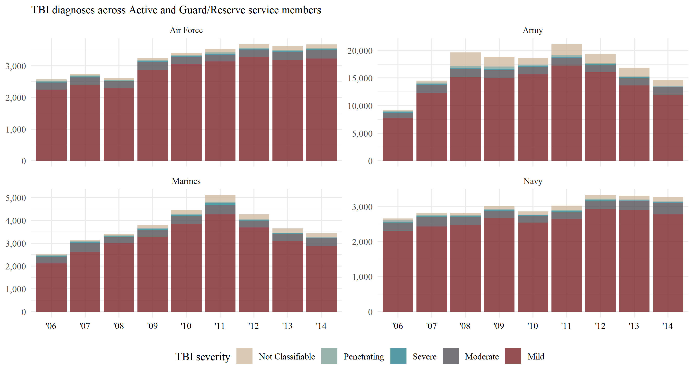
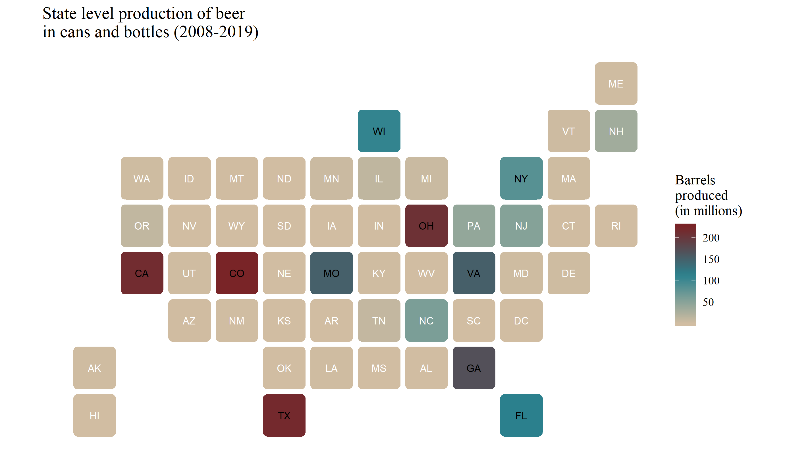
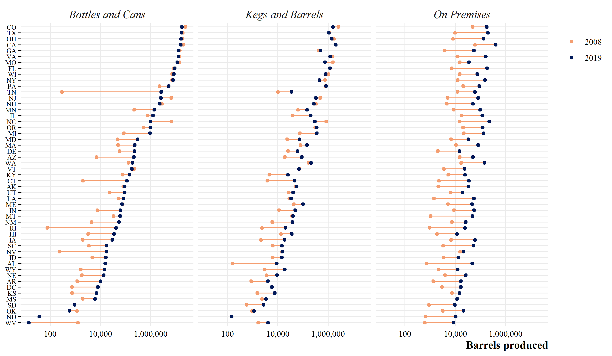
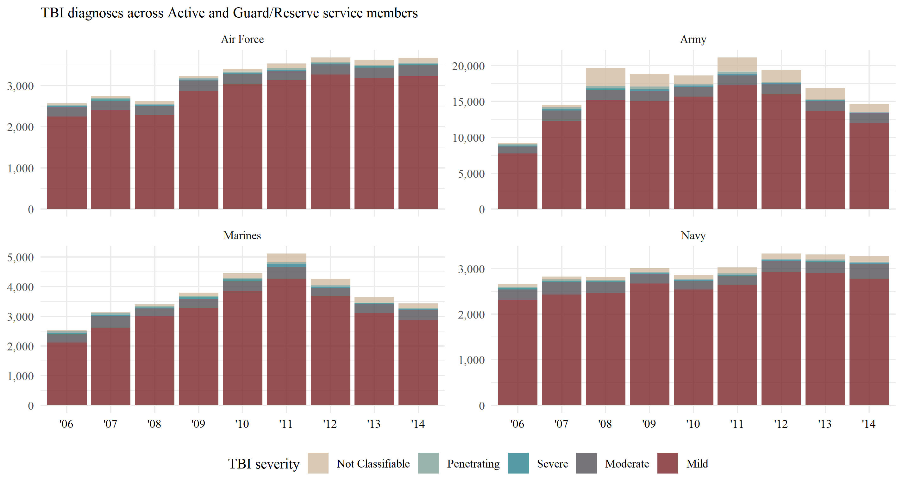
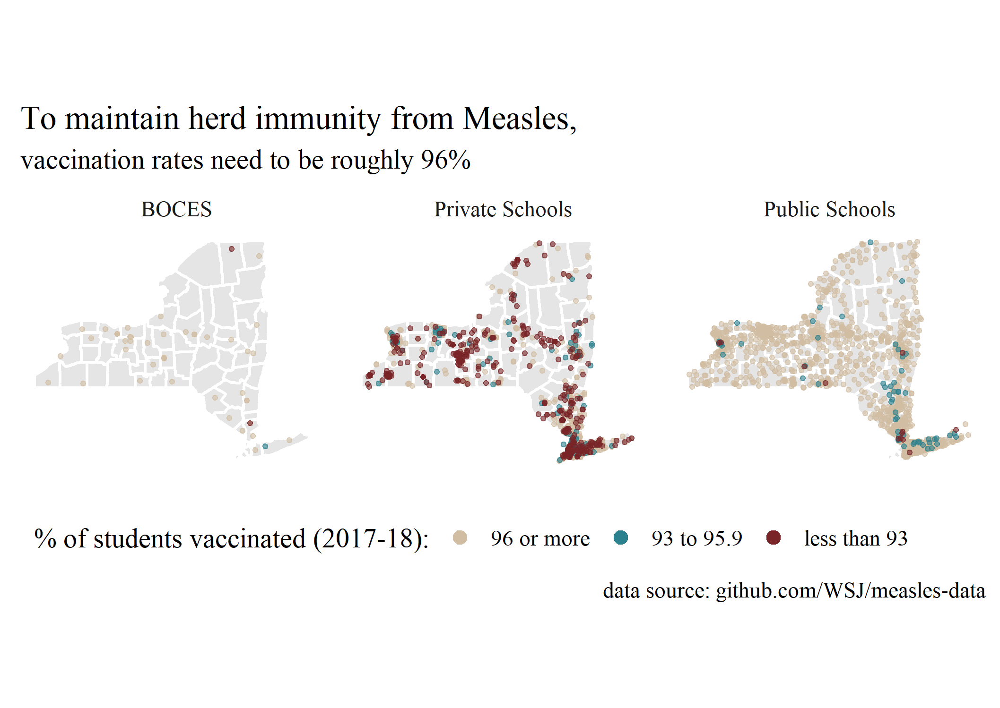
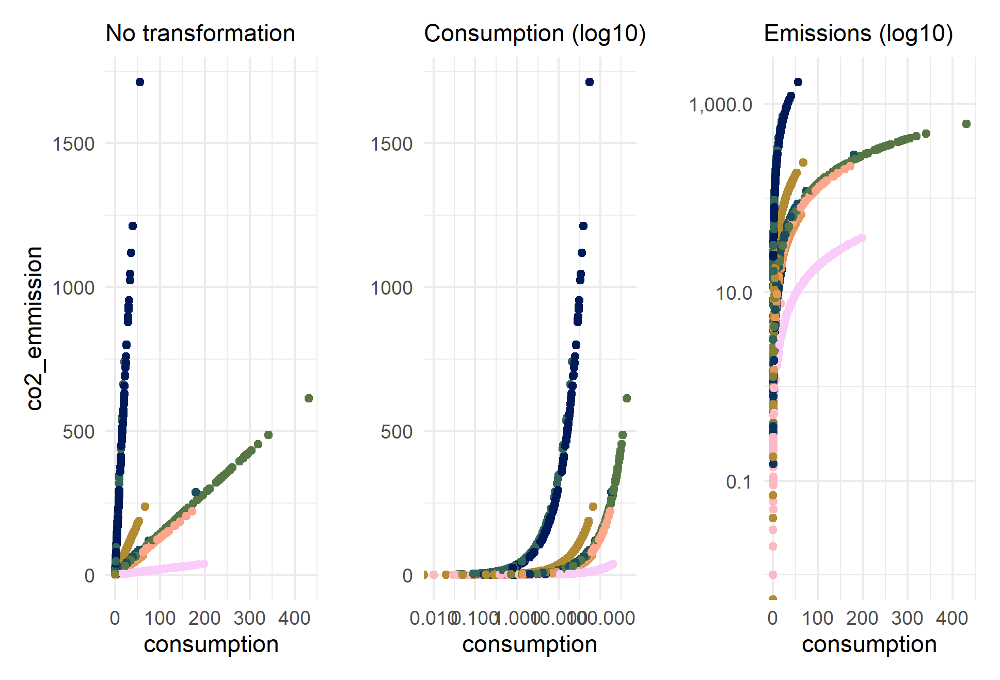

TBI (2020-03-24)



A collection of plots using data from the #tidytuesday project







Figure 1: Although CO2 emissions increase with consumption, regardless of food type, an interaction model shows us that on average CO2 emissions are higher with animal-food consumption than with plant-based consumption

Figure 2: Using a log-log plot really helps us see the relationship between these variables
